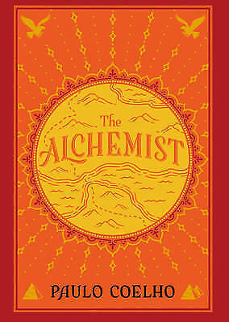
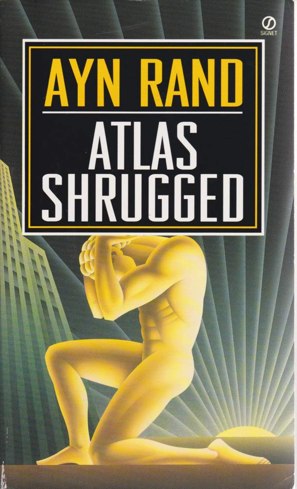

My Favorite Books and Quotes
Fantastic Books
The Alchemist
Following the journey of a young man who is finding his destiny in life, this book is full of great lessons while exploring a terrific plot. Set in ancient lands, it follows his travels through many foreign places and what he learns along the way. He meets with many interesting, wise characters. He also meets bad actors who try to detract him from his personal destiny. I would highly recommend this book for younger teens as level of word usage and story complexity is not too high.
Buy The Alchemist
Zero to One: Notes on Startups, or How to Build the Future

Peter Thiel is a famous entrepreneur who was one of the founders of PayPal and Palantir and an investor in Facebook, Lyft, and Spotify, among others. In this world-renouned book, Thiel teaches the same lessons he taught to students at Stanford when he taught classes. Covered things such as how to go about creating a brand new company to how many shareholders to have, this bold book is a must read for entrepreneurs and businesspeople.
Buy Zero to One
Atlas Shrugged
Atlas Shrugged is known by many as a classic and an example of the great American literature. Set in the American industrial revolution, this book follows several industrialist as the struggle against an incomptent, yet devious government. I recommend this novel for more skilled readers, usually above the age of 16. This book is very long (over 1,000 pages) and uses sophsicated words, complex symbolism, and an intricate plot.
Buy Atlas Shrugged
12 Rules for Life: An Antidote to Chaos

Written by the famous philosopher and intellectual Jordan Peterson, this is a must read for anyone who is interested in reading self-help books. Serious and comedic at the right times, this book is known by many as helping them get out of a deep dark hole in their life, or simply helping others who are already doing well. With rules like, "Compare yourself to who you were yesterday, not others today" and "Tell the truth, or at least don't lie" this book imparts useful, age-old wisdom that gives useful ways for the reader to live life more virtously.
Buy 12 Rules for Life
The Queen's Gambit

The Queen's Gambit is an inspiring novel for chess and non-chess players. Recenlty made into a hit Netflix original TV show, this novel follows the story of Beth Harmon as she advances in her knowledge and skill playing chess. With inspiring coming of age scenes, I would recommend this book to anyone over the age of 16, because of some explicit content.
Buy The Queen's Gambit
Great Quotes
“When you have something to say, silence is a lie.”
- Jordan B. Peterson, 12 Rules for Life: An Antidote to Chaos
“Contradictions do not exist. Whenever you think that you are facing a contradiction, check your premises. You will find that one of them is wrong.”
- Ayn Rand, Atlas Shrugged
"When you want something, all the universe conspires in helping you to achieve it.”
- Paulo Coelho, The Alchemist
“You must determine where you are going in your life, because you cannot get there unless you move in that direction. Random wandering will not move you forward. It will instead disappoint and frustrate you and make you anxious and unhappy and hard to get along with (and then resentful, and then vengeful, and then worse).”
― Jordan B. Peterson, 12 Rules for Life: An Antidote to Chaos
“It's the possibility of having a dream come true that makes life interesting.”
- Paulo Coelho, The Alchemist
"Every moment in business happens only once. The next Bill Gates will not build an operating system. The next Larry Page or Sergey Brin won’t make a search engine. And the next Mark Zuckerberg won’t create a social network. If you are copying these guys, you aren’t learning from them.”
― Peter Thiel, Zero to One: Notes on Startups, or How to Build the Future
“Do not let your fire go out, spark by irreplaceable spark in the hopeless swamps of the not-quite, the not-yet, and the not-at-all.”
- Ayn Rand, Atlas Shrugged
“You have brains in your head. You have feet in your shoes. You can steer yourself any direction you choose. You’re on your own. And you know what you know. And YOU are the one who’ll decide where to go.”
- Dr. Seuss, Oh, the Places You’ll Go!
“It matters not what someone is born, but what they grow to be.”
- J.K. Rowling, Harry Potter and the Goblet of Fire
"The last ever dolphin message was misinterpreted as a surprisingly sophisticated attempt to do a double-backwards-somersault through a hoop whilst whistling the ‘Star Spangled Banner’, but in fact the message was this: So long and thanks for all the fish."
- Douglas Adams, The Hitchhiker's Guide to the Galaxy
“Made weak by time and fate, but strong in will,
To strive, to seek, to find, and not to yield.”
- Alfred Lord Tennyson, Ulysses
“I thought what I’d do was, I’d pretend I was one of those deaf-mutes....If anybody wanted to tell me something, they’d have to write it on a piece of paper and shove it over to me. They’d get bored as hell doing that after a while, and then I’d be through with having conversations for the rest of my life.”
-J.D. Salinger, The Catcher in the Rye
“The greatest ideas are the simplest.”
-William Golding, Lord of the Flies
“Real courage is when you know you’re licked before you begin, but you begin anyway and see it through no matter what.”
- Harper Lee, To Kill a Mockingbird
"Space is big. Really big. You just won’t believe how vastly, hugely, mindbogglingly big it is. I mean, you may think it’s a long way down the road to the chemist’s, but that’s just peanuts to space.”
- Douglas Adams, The Hitchhiker's Guide to the Galaxy
"If my life is going to mean anything, I have to live it myself."
- Rick Riordan, The Lightning Thief
"For to have faith is to have wings."
- James Matthew Barrie, Peter Pan
“Chess isn't always competitive. Chess can also be beautiful.”
- Walter Tevis, The Queen's Gambit
"Be yourself and people will like you."
— Jeff Kinney, Diary of a Wimpy Kid
Contact Me!
Hello! My name is Michael Maddalon and I love reading books. I am currently a business student at Carnegie Mellon University, and if you want to get in touch with me feel free to send me an email or a call me.
Phone - (555) 555-5555
Email - mdmaddalon@gmail.com